bunny bookmark
A crochet bunny/miffy bookmark. Made of 100% cotton yarn.

i 🫶 books and making books, so let’s bind some together (Oct 2025)
A bookbinding manual compiling techniques from artist-educator Sarah Nicholls, combining instructional content with visual documentation—a project that deepened my understanding of how editorial design guides readers through complex information.

scilati (May 2025)
A serif typeface that slants to the left, challenging the conventional notions of italicization, which usually leans right.
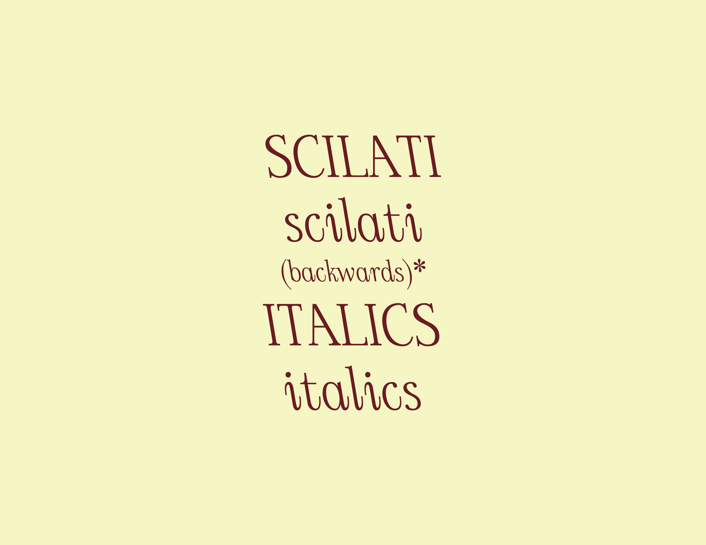green? sweater (May 2025)
A single bed machine knitted sweater.
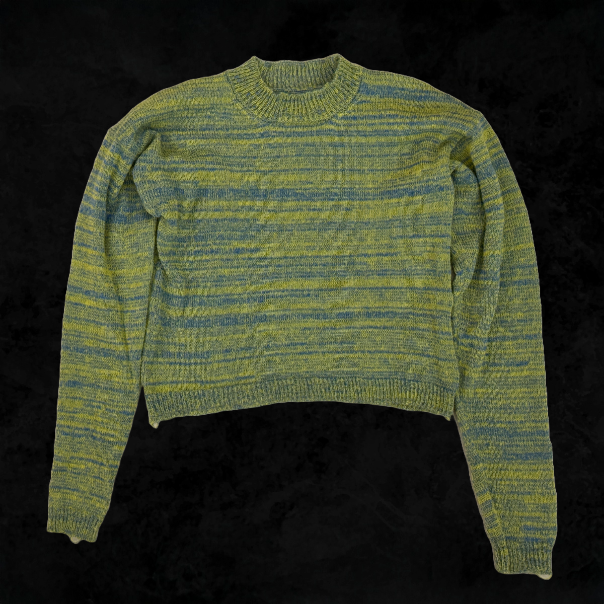ottoman (Apr 2025)
A mini shortie ottoman.
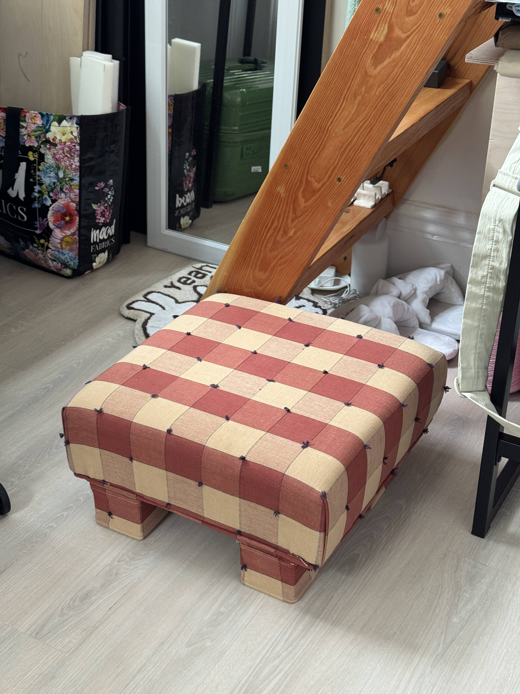flower pillow (Mar 2025)
A flower pillow made from scratch with a removable cover.
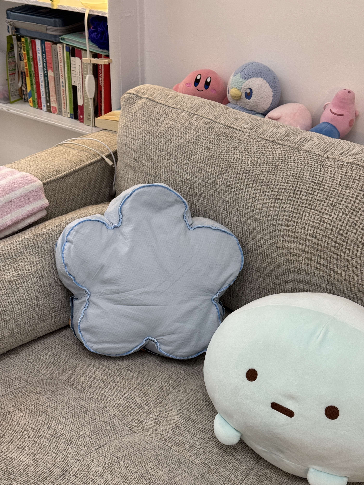stripe project (Feb 2025)
A single bed machine knitted swatch based on a photo I took in Vermont.

pet scarves
A series of crochet pet scarves. Patterns by @devout_hand.
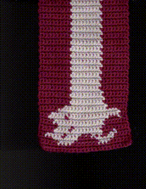CNC Machine Record Player Stand & Storage (Dec 2024)
A turntable stand and record storage made using the CNC Machine. Made of 1/2" Baltic Birch Plywood.
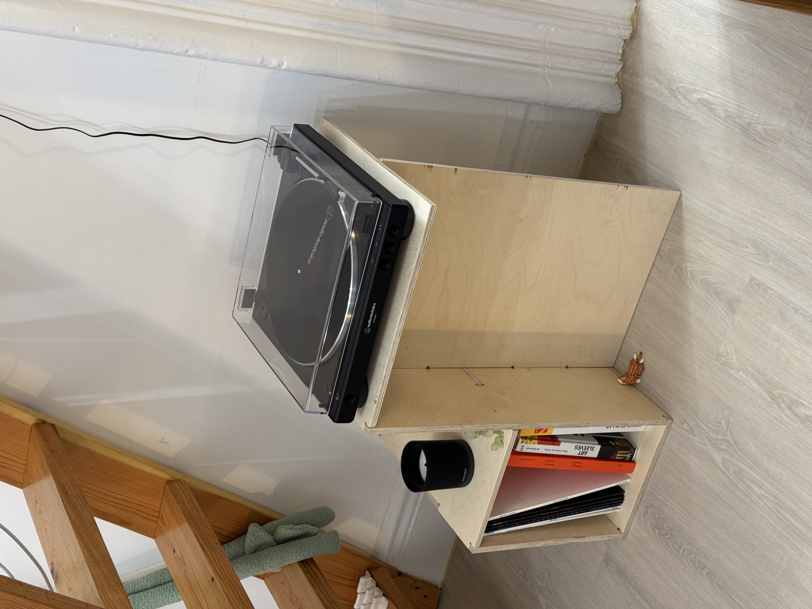A new sign in on (censor bar) (Nov 2024)
This artist's book reinterprets Google's security notifications through typography and composition, turning everyday digital alerts into a visual narrative that explores our relationship with online identity and authentication.
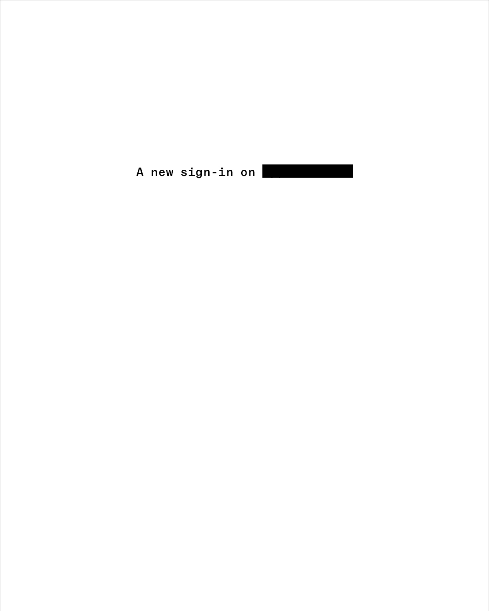1903 film sequence (Sep 2024)
This artist's book showcases an unedited 35mm film roll from the summer of 2024, presented in an accordion format with fold-out sections. It preserves the film's original dimensions to demonstrate how moments connect and flow through time as they were originally captured.
* available for purchase! contact me for more info :P

Manifesto: Designer as Curious George (May 2024)
I created a motion graphic for Constantin and Laurene Leon Boym's "Manifesto #16: Designer as Curious George" from the design manifestos collection. This manifesto resonated with me because it uses the character Curious George to illustrate how designers should always be driven to play, experiment, and embrace failure as a learning experience.
TouchDesigner: Artist Recreation (May 2024)
Inspired by Camille Utterback’s installations, in which she uses different texts, icons, images, etc., to create abstract symbolic systems, as well as our relationship with interfaces and symbolic systems of the machines, I recreated her installation, Visual Resolve, 2000, an abstracted version of the participants created on the screen, where she explores the levels of the icons and the overall image. This project connects to the Magnification project, and exploring how magnification can be experimented with and how it challenges our visual perception in a digital space.
Project 4: Artist Recreation
for School of Art, Media, and Technology, BFA DT Interactive and Immersive environments, TouchDesigner with Torin Blankensmith (Spring 2024)
Note: this uses TouchDesigner Version 2023.11600

TouchDesigner: Music Visualizer (Apr 2024)
I created my own VJ set with 4 unique audio reactive visualizers to play through Jungle's Candle Flame. I linked up TouchOSC to handle transitioning between the visualizers and controlling parameters in each visualizer.
Project 3: Music Visualizer
for School of Art, Media, and Technology, BFA DT Interactive and Immersive environments, TouchDesigner with Torin Blankensmith (Spring 2024)
Note: this uses TouchDesigner Version 2023.11600
From Print to Motion (Apr 2024)
YOKKAO's Muay Thai hand wraps feature typography and icon, providing a balance of detail for animation. I created a 15-second animation using After Effects that reveals the visual elements of the hand wraps' design.
TouchDesigner: Experimental Camera (Mar 2024)
This project explores designing a camera to capture specific subjects—whether a person, place, or object. It investigates how camera features and filters influence and alter our perception of these subjects. This project challenges conventional cameras by offering unique perspectives through their specialized functions and filter effects.
Project 2: Experimental Camera
for School of Art, Media, and Technology, BFA DT Interactive and Immersive environments, TouchDesigner with Torin Blankensmith (Spring 2024)
Note: this uses TouchDesigner Version 2023.11600
A Play with Motion & Sound (Feb 2024)
In this project, the class collaboratively created a "music video" using the given music piece by combining shapes and movement techniques to illustrate synesthesia and cause and effect. I aimed to align the visuals with the music, considering composition, sequence, and color palettes. Each student animated an assigned music segment and also created the opening title and closing credits for the class compilation using After Effects.
Breaking News: Long Live the Chicago Rat Hole (Feb 2024)
This project explores how time-based presentation can transform a simple typographic message, examining the interplay between form and content in motion. By animating the headline of the article "Long Live the Chicago Rat Hole" from The Atlantic, I looked the effects of size, placement, composition, sound, speed, pauses, repetition, spacing, and color on the message over time. This project aims to reveal the dynamic potential of headlines through motion.
TouchDesigner: Animation (Feb 2024)
The conceptual focus is on distortion and pixelation, with an audio track that complements the visual theme. I experimented with different elements as starting points and built on the initial elements using other TOPs and CHOPs.
Project 1: Animations
for School of Art, Media, and Technology, BFA DT Interactive and Immersive environments, TouchDesigner with Torin Blankensmith (Spring 2024)
Note: this uses TouchDesigner Version 2023.11600
hands (Oct 2023)
Shot on 16mm film. Moving from the everyday rhythm of pedestrian life to the charm of artistic moments, the film reaches its peak with hands in a lively dance. Each frame shares the unique stories held in the hands of a lively city, unveiling a new tale in every shot.
Magnification (Nov 2023)
This project investigates the microscope as an instrument of revelation, one that reveals the complexities of the invisible, how magnification embraces what is not apparent and reveals an intricate web of sophistication and elegance woven into even the smallest elements, where each magnified imagery turns the ordinary into something extraordinary. A digital form of the book is also created to explore the same concept and content but on a screen.
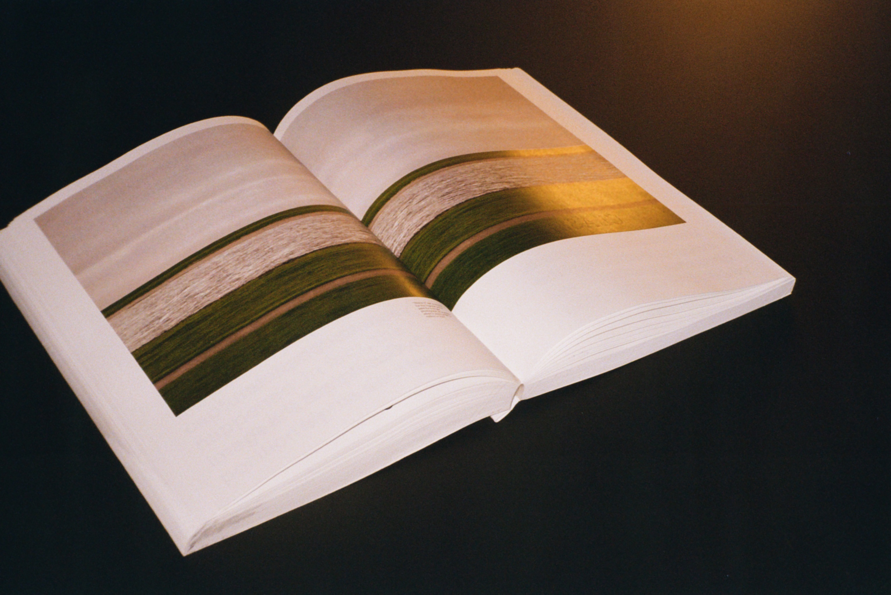Complement :) (Oct 2023)
This project (publication & website mockup) takes a closer look at the intricate connection of elements, showing how even those with less innate value on their own can enhance and elevate something else, eventually improving that “something else.” It is about the underlying relationships and the narratives, how each small, simple thing can develop and expand to become a part of an interesting story and add to a more vibrant whole. So a lot of things in our environment contributes to creating a narrative, enhancing an experience, and ultimately, making something better.

scrap yarn bucket hat
A crochet bucket hat using scrap yarn.

wheels on the bus (May 2023)
(project 3. intx w/ the city: New York City in Data)
Data is all around us and can help us understand new aspects about our environment. Using the New York City open data, a set of data on bus breakdown and delays is selected and visualized using p5.js. This project considers the relationship between the form, the story, and the data itself. How does the data’s container help encourage an understanding of the data not possible without it?
UFC 287: Pereira vs Adesanya 2 (Apr 2023)
Event poster printed on the letterpress for UFC 287: Pereira vs Adesanya 2, a mixed martial arts event by the Ultimate Fighting Championship that took place at the Kaseya Center in Miami, Florida on April 8, 2023.

People Watching People: Chinatown, Manhattan, NY (Apr 2023)
(project 2. intx w/ data: Elastic Collection)
Any time you see a multiplicity of an object, you begin to notice similarities and contexts in a new way. Seeing multiple of an object allows for this kind of in depth research that observing one object does not. The way the object is documented and organized helps direct the viewer on how the object is meant to be experienced.
This project investigates the themes of privacy through people-watching. The aim of this project is to gather and organize a collection of data, understand metadata, to tell a story through content curation and order, to experiment with interactions with a collection, and to develop a working relationship of JavaScript objects and data collections.
* all data is pulled from a JSON file and uses JavaScript & is responsive and function on a mobile screen
Home (Apr 2023)
A 48-page zine on Chinese and Thai wedding traditions. As someone with Chinese and Thai heritage, this developed from my interest in these cultures' wedding traditions and cultures.
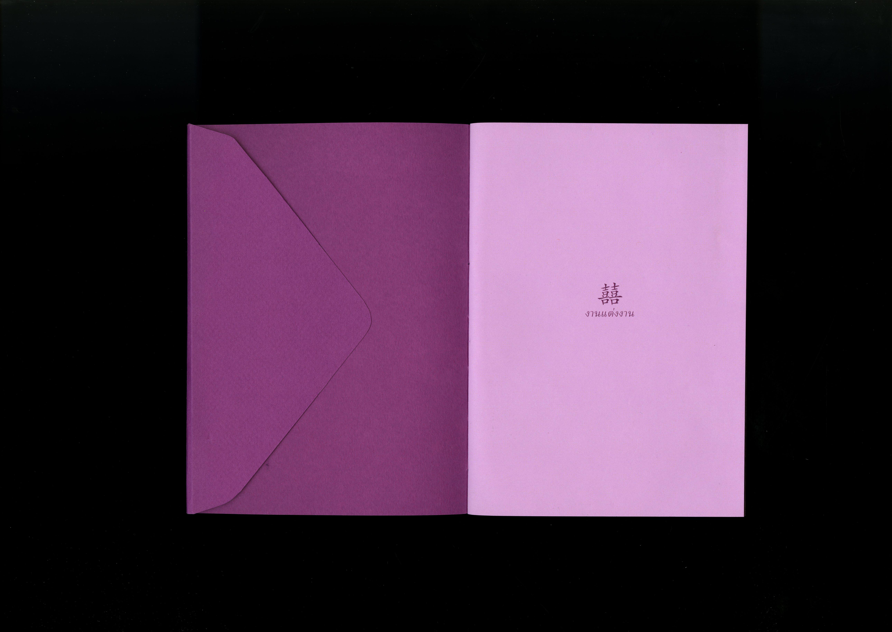Stories as Networks (Feb 2023)
(project 1. intx w/ typography)
The reader will not only be able to read the story “On Beginnings” from Madness, Rack and Honey by Mary Ruefle, but also experience my interpretation of the story. The aim of this project is to build a multi-page website that experiments with navigation to convey meaning, and to interpret a story through expressive typography online.

Core 2: Interaction - Lab Assignments (Jan-May 2023)
Core 2: Interaction Lab is designed around a series of small workshops that teach beginning and intermediate interaction design through a hands-on engagement with HTML, CSS and Javascript.
Core 1: Interaction (Aug-Dec 2022)
Harmonic Collection: each week, an entry is designed and coded to this collection that explores my daily life. at the end of the semester, a website that houses 10 programmed entries is delivered.
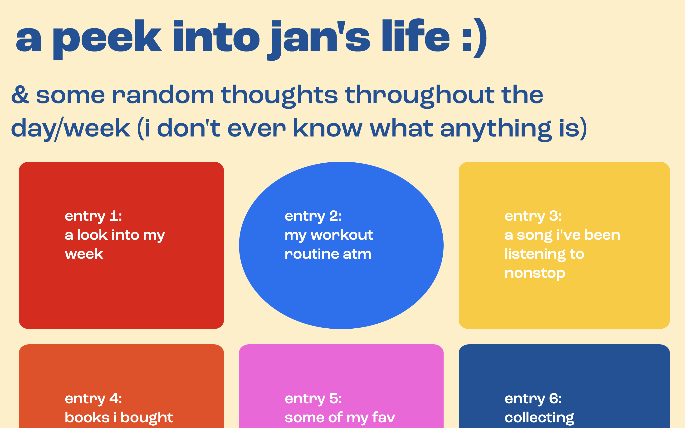Editorial Design (Dec 2022)
A 50-page publication based on a selection of articles from a credible online newspaper (or magazine).
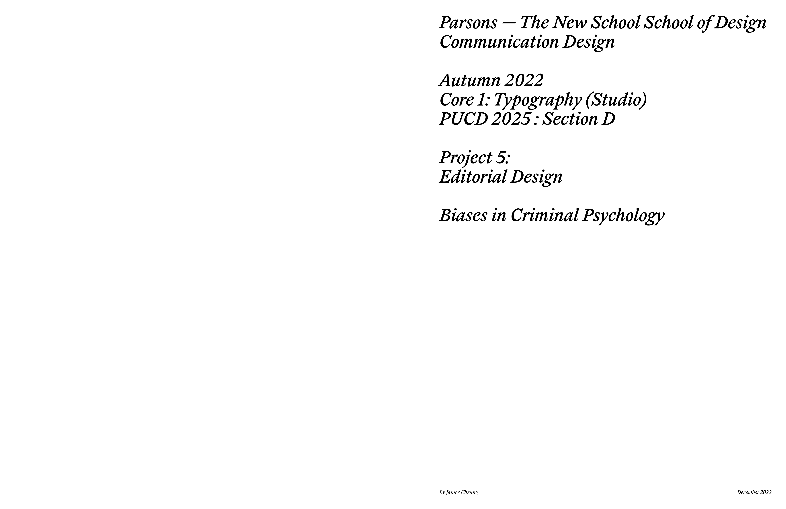Typographic Poster (Nov 2022)
A typographic poster promoting the “opening” of TamJai SamGor MiXian, a renowned noodle shop from Hong Kong, incorporating Chinese typography to showcase the rich cultural heritage and essence of the restaurant.
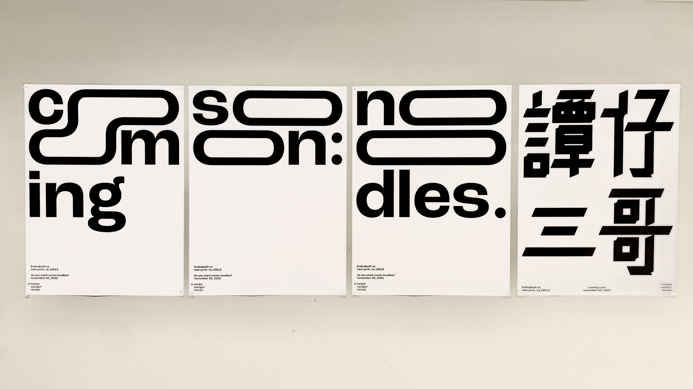Typographic Contrast (Oct 2022)
A booklet delving into the artistic impact of typographic contrast, offering a comprehensive study of its formal effects, diverse visual outcomes, and layout design in a multipage format.
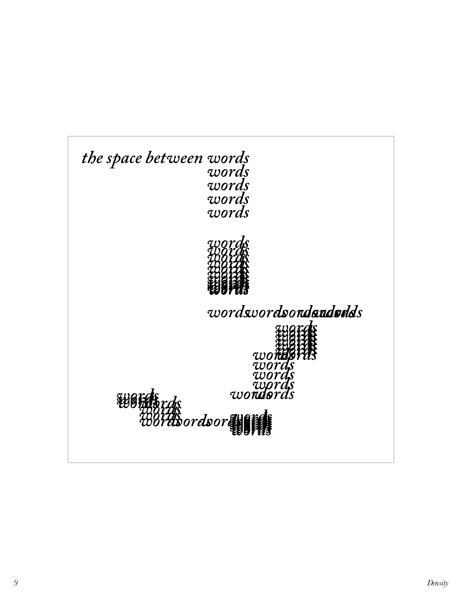Modular Typeface (Sep 2022)
A distinctive typeface constructed by merging modular components using fixed units and an underlying grid, exploring the defining characteristics of each letter and the visual cohesion created by repeating elements.

MVI_2496 (May 10-12, 2022)
Video animation using cyanotypes and screen grabs from video taken at Cheat Code's concert in New York, NY on Feb 05, 2022.
*** warning: video contains flashing images and loud audio!
MVI_2400 (May 10-12, 2022)
Video animation using cyanotypes and screen grabs from video taken at Cheat Code's concert in New York, NY on Feb 05, 2022.
*** warning: video contains flashing images and loud audio!
I DON'T KNOW YOU (YET) (May 2022)
The card game “I DON'T KNOW YOU (YET)” aims to foster vulnerability and deep conversations, providing a safe space for transparency and meaningful connections through three levels of questions and wildcards, with a pastel color palette reflecting openness and relaxation.

Post Concert Blues (Jan-May 2022)
In this one minute video project, I created a documentation of a performance, more specifically capturing a concert and what it means to leave the space right after, to have the music follow you or linger, but to have to “conceal” it in public.
love story (Dec 2021)
love story is a short film about the relationship between GIRL 1 and GIRL 2 (played by Aviela Berk & Sade Ajas) and how it turns out to be not as romantic as you might think. The art film experiments with the archetypes of psychological horror films and attempts to break the stereotypical “look” and “plot” while still aiming to leave the audience unsettled afterwards.
Shot in Boston, MA and New York, NY.
Writer, director, producer, cinematographer, and editor.
GOODBYE, SUMMER (Sep 15, 2021)
Video documentation of my 2021 summer spent with friedns and family in Hong Kong during COVID and after high school graduation in May 2020.
Shot in Hong Kong, edited in New York, NY.
Editor and cinematographer (w/ SeeWing Chun and Tiffany Iu)
ANAIA 2019 x LEVI'S (Feb 10 ,2018)
ANAIA is Island School's annual student-led fashion show, supporting a charity, Maggie's Cancer Caring Centre. To acknowledge the collaboration between Levi’s®️ and ANAIA 2019, this promotional video was designed to capture how the Levi’s®️ brand epitomizes classic American style and effortless cool, and to celebrate self-expression and individuality through their clothing.
Produced in Hong Kong.
Director, cinematographer (w/ SeeWing Chun), and editor.
ANAIA 2019 x FACE REVEAL (Oct 03, 2018)
This promotional video was used to announce the faces of ANAIA 2019. The video not only helped promote the upcoming show, it also showcased an opportunity for students to become a model.
Produced in Hong Kong.
Co-directors and cinematographers (w/ Aryan Bellani, Seewing Chun and Yunah Frank), editor.
cherry shoulder bag
A crochet cherry shoulder bag.
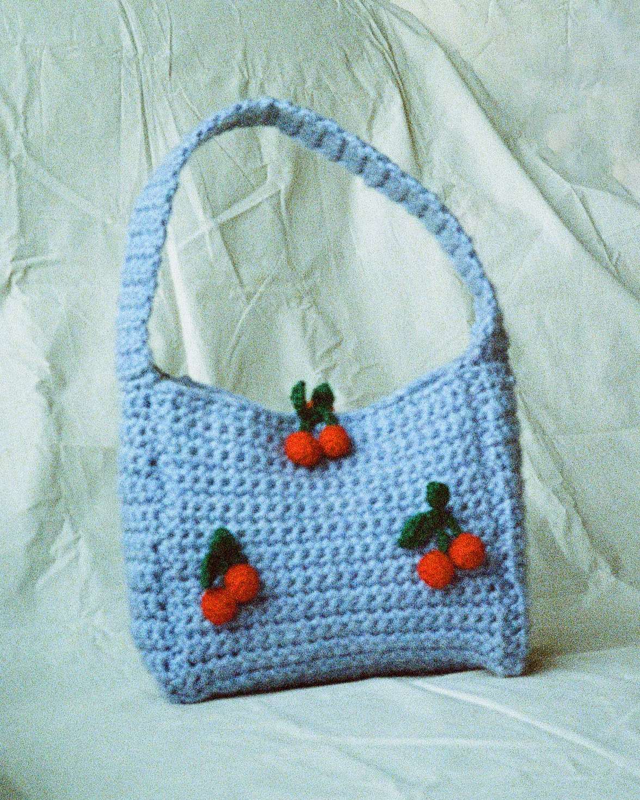pink hearts shoulder bag
A crochet pink hearts shoulder bag. A gift for Aika.
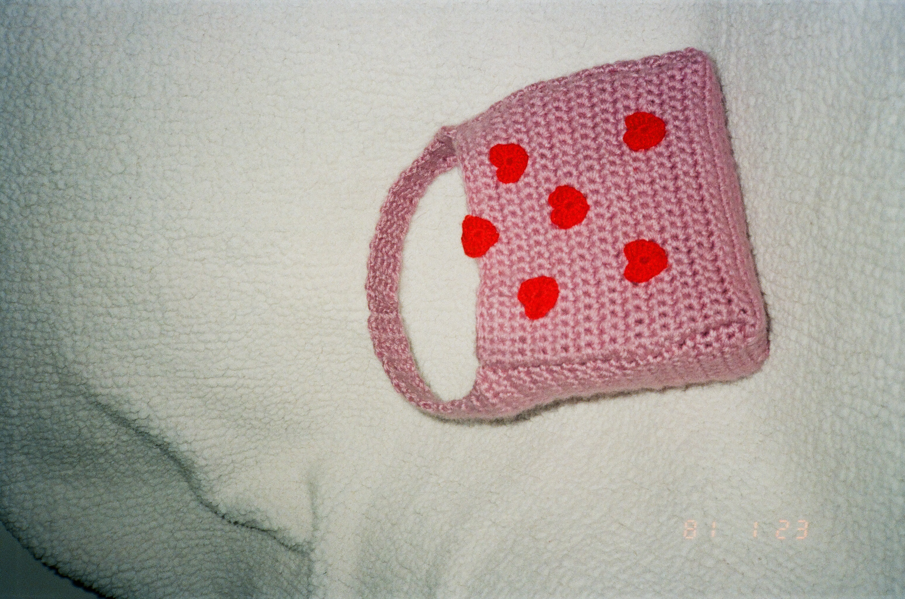